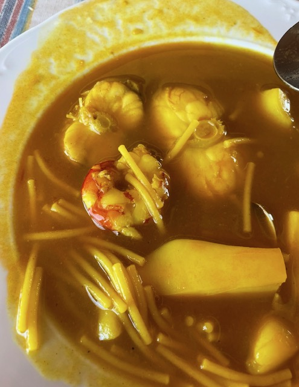

Home
Seafood Stew

Description
This fish stew recipe was taken from my father.
It combines many wonders of the Mediterranean in a plate.
It is usually made in times of celebration. For instance, the last
time I made this plate was in New Year's Eve (31/12/2024) in Mallorca.
Ingredients
- 2 large cuttlefish or squid (2 if medium/small)
- 2 large monkfish tails
- 10 large prawns
- 250g of clams
- Olive oil
- 2 green peppers
- 3 medium tomatoes
- 2 onions
- 4 garlics
- 2 tablespoons of salt (taste and adjust if needed)
- 3/4 of a teaspoon of black pepper
- 1.5 tablespoons of sweet paprika
- 1 tespoon of saffron, food coloring, or paella seasoning
Steps
- Chop the pepper, onion, tomatoes, and garlic into large pieces
- Add a generous splash of oil to cover the bottom of the pot.
Set heat to medium-high and add the vegetables. Cover and stirr occasionally
so they do not burn. Add salt at this stage if desired.
- Once the vegetables have softened, add water until the pot is half full (or a little more).
Boil for ten minutes. Meanwhile, peel the prawns and keep the shells and heads aside.
- In a separate, small saucepan, add the prawns shells and heads with one and a half glasses of water.
Boil for 3 minutes to extract the flavor.
- After the vegetables have boiled for 10 minutes, lower the heat and blend everything. Strain the prawn
stock and add it to the pot (before or after blending). Add black pepper, paprika, and saffron/coloring.
Bring back to boil and add the chopped cuttlefish/squid.
- The cuttlefish cooks in about 12 minutes. Test it to check tenderness and adjust salt. Next, add the noodles.
After 3 minutes, add the monkfish. When the noodles are nearly done (around 8 minutes), add the prawns and
clams, which cook in just 2-3 minutes